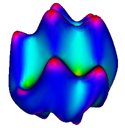

Statistical shape analysis --- A quantitatively validated approach Source code
In our project:
``Gao Y, Bouix S. Statistical Shape Analysis using 3D Poisson Equation---A Quantitatively Validated Approach. Medical Image Analysis. , vol. 30, pp. 72-84, 2016.''
- We proposed a new statistical shape analysis/morphometry technique based on the 3D Poisson Equation.
- In addition, we proposed a quantitative evaluation framework for morphometry/shape analysis methods.
- To the best of our knowledge, this is the first quantitative morphometry evaluation framework and the proposed method is the morphometry technique that is systematically and quantitatively validated and evaluated.
- The source code is hosted on github at here.
Multi-scale shape representation & 3D wavelet transformation Source code

In our project:
``Y. Gao, B. Corn, D. Schifter, and A. Tannenbaum, Multiscale 3D shape representation and segmentation with applications to hippocampal/caudate extraction from brain MRI, Medical Image Analysis, vol. 16, no. 2, pp. 374-385, 2012''
we proposed a multi-scale shape decomosition and reconstruction for 3D shapes of arbitrary topology. As a bi-product, we release the code for performing 2D and 3D wavelet transform on ITK images. The source code is hosted on github at here.
Conformal map a VTK surface to a sphere Source code
Given a genus-0 surface, that is, a closed surface with no holes and no handles, this filter maps the surface to a sphere. The angle will be preserved during the mapping. It's based on the paper On the Laplace-Beltrami operator and brain surface flattening by Angenent, Haker, Tannenbaum and Kikinis, published on IEEE TMI. The implementation is now shipped with the InsightToolkit. The implementation and the usage is detailed in the
Gao Y, Melonakos J, Tannenbaum AR. Conformal Flattening ITK Filter. MICCAI, Open Science Workshop/Insight Journal, 2006
For example, the surface below on the left will be mapped to the sphere on the right.
The sources code here, however, is a further improvement over the previous publication: First, after we submitted it to the Insight Journal, thanks to the contribution of Dr. Alexandre Gouaillard and the open science philosophy of the journal, the code has been improved to be more coherent with the ITK framework. Later, we utilized the preconditioned conjugate gradient solver in the computation which significantly accelerated the algorithm. The last improvement was a to make sure that the points on the final sphere is more evenly distributed.
Comparing with the code now in ITK 3.20, the code here has tighter convergence criteria and therefore gives better result. These changes will be adopted in ITKv4.
Interactive 3D segmentation software based on local statistics
Tracing out the target in a 3-Dimensional volume data is time consuming. This algorithm/software is an end-user oriented, interactive 3D image segmentation tool. It is fully integrated in the 3D Slicer software. To use it, the user will simply provide a few strokes in the desired region and this algorithm/software then takes over and performs the full 3D segmentation.
TODO: I'll add code here soon.
A bank of shapes for validating statistical shape analysis methods
In our project:
``Gao Y, Riklin-Raviv T, Bouix S. Shape analysis, a field in need of careful validation. Human brain mapping. 2014 Oct 1;35(10):4965-78.''
We proposed a framework for validating statistical shape anlaysis methods.
TODO: I'll add the shapes here soon.
Wavelet transform on sphere
- How to do wavelet analysis on a 2-sphere?
- How that can be applied to localized analysis of a shape?
TODO: I'll add code here soon.